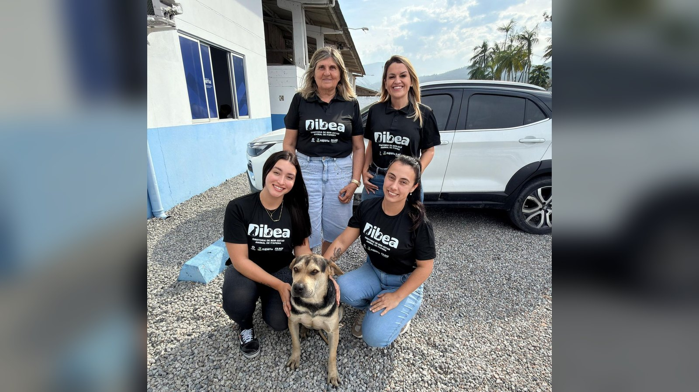

Itapema · Meio Ambiente
Itapema · Meio AmbienteFAACI marca reunião pública para explicar as novas regras ambientais de obra em Itapema
A mesma fundação a que a Diretoria está ligada.
A Diretoria de Bem-Estar Animal existe desde 2026, está ligada à FAACI e cuida do planejamento: castração, microchipagem, campanha de posse responsável e o caminho da denúncia de maus-tratos. O atendimento ao animal continua no DABA, que tem o canil.
Em 30 segundos · Modo de Leitura, formato original Santa Informa
Itapema tem a Diretoria de Bem-Estar Animal, a DIBEA.
Ela existe desde 2026.
Está ligada à FAACI, a fundação ambiental da cidade.
Cuida de castração e de microchipagem.
Também de campanha de posse responsável.
E de prevenção aos maus-tratos.
O atendimento veterinário fica no DABA, que tem o canil.
A diretora é Hilene Corso.
Caso de maus-tratos vai para a fiscalização da FAACI.
A Diretoria também pode fazer censo de animal na cidade.
Meio AmbientePublicada em Redação Santa Informa

Itapema tem, desde 2026, uma Diretoria de Bem-Estar Animal, a DIBEA, ligada à Fundação Ambiental Área Costeira de Itapema, a FAACI. A Prefeitura publicou nesta sexta-feira, 28, uma explicação do que essa estrutura faz. Em poucas palavras, ela planeja e coordena a política de proteção animal do município: conscientização, prevenção aos maus-tratos, castração, identificação do animal e conversa com os protetores e com outros órgãos.
Essa é a dúvida mais comum de quem procura ajuda para um bicho na rua, e a própria diretora responde com uma comparação. "Costumamos explicar que o DABA funciona como um hospital, porque é onde acontece o atendimento direto ao animal. A Diretoria tem uma atuação muito mais ampla. Nosso trabalho envolve pensar as políticas públicas, organizar ações de castração, conscientização, prevenção aos maus-tratos e construir, junto com outros órgãos e com os protetores, estratégias para melhorar cada vez mais o cuidado com os animais em Itapema", diz Hilene Corso, diretora de Bem-Estar Animal.
O DABA, Departamento de Atendimento e Bem-Estar Animal, é gerido por uma entidade e concentra o atendimento veterinário e o acolhimento, incluindo a estrutura de canil. A DIBEA acompanha e fiscaliza a execução desses serviços e, ao mesmo tempo, cuida da política mais ampla.
Entre as atribuições da Diretoria estão o planejamento de programas de proteção, as campanhas educativas de posse responsável, as ações de castração e de microchipagem e a organização de eventos de conscientização. Quando o caso é de maus-tratos, a Diretoria encaminha a situação para a fiscalização da FAACI, que é quem aplica as medidas administrativas.
Outra atribuição é produzir dado sobre a população animal do município. A DIBEA pode coordenar levantamento e censo de animal doméstico para ajudar a definir prioridade e a desenhar programa novo. Numa cidade de litoral, que multiplica gente na temporada e costuma ficar com bicho abandonado depois dela, saber quantos são muda o tamanho que o mutirão de castração precisa ter.
A atuação também prevê parceria com órgão municipal, estadual e federal, como Vigilância Sanitária, forças de segurança, conselhos profissionais e entidades da causa animal. Com a Diretoria, diz a Prefeitura, a cidade passou a ter uma estrutura dedicada não só ao atendimento do animal, mas ao planejamento da prevenção, do controle populacional, da educação e da proteção.
O resumo de 30 segundos está no topo e a versão completa é o texto acima. Aqui ficam as três leituras da casa sobre o mesmo assunto.
Clara, a otimista
Cidade que monta estrutura só para isso está tratando a causa animal como política pública, e não como favor de quem gosta de bicho. Isso muda o jogo, porque política pública tem plano, tem parceiro e tem continuidade.
E o foco está no lugar certo. Castração e microchip resolvem na raiz: menos ninhada na rua, menos animal perdido sem dono para achar. Quem cuida de bicho abandonado em Itapema já faz isso sozinho há anos, e agora tem com quem falar dentro da Prefeitura.
Seu Prudêncio, o criterioso
A separação entre quem planeja e quem atende é boa no papel. Merece atenção, porém, o encaixe na prática: o DABA é gerido por uma entidade e a DIBEA fiscaliza esse serviço, então a qualidade do arranjo depende de contrato claro e de relatório que alguém de fora consiga ler.
Vale acompanhar o número, que é o que mede tudo isso. Quantas castrações por mês, qual a fila, quanto tempo o tutor espera, quantos microchips colocados e quantas denúncias de maus-tratos viraram medida administrativa. Uma sugestão útil: publicar esses quatro dados num painel simples, atualizado todo mês. Custa pouco e evita discussão.
Falta ainda o canal de contato da própria Diretoria, porque quem acha um animal machucado num sábado não tem tempo de descobrir a quem ligar. Dito isso, ter uma diretoria com essa atribuição já é mais do que boa parte das cidades do litoral tem, e a atribuição de fazer censo de animal é das mais úteis da lista.
Caco, o sarcástico
Itapema agora tem diretoria de bem-estar animal. Meu vira-lata soube e já quer marcar reunião para tratar do horário da ração.
Microchipagem no cachorro. Daqui a pouco ele acha o caminho de casa melhor que eu, e eu moro aqui há doze anos.
E o melhor da explicação foi comparar o DABA com hospital. Ou seja: o bicho de rua de Itapema tem hospital e tem secretaria. Reclamar de quê.
Fontes: Prefeitura de Itapema, publicação de 28 de agosto de 2026 com a explicação da Diretoria de Bem-Estar Animal (DIBEA), que existe desde 2026 e está vinculada à Fundação Ambiental Área Costeira de Itapema (FAACI), trazendo as atribuições de conscientização, prevenção aos maus-tratos, castração, identificação animal, articulação com protetores, campanhas de posse responsável, microchipagem, organização de eventos e produção de dados sobre a população animal, a atuação integrada ao Departamento de Atendimento e Bem-Estar Animal (DABA), gerido por uma entidade e responsável pelo atendimento veterinário, pelo acolhimento e pelo canil, o encaminhamento dos casos de maus-tratos à fiscalização da FAACI, a previsão de parceria com Vigilância Sanitária, forças de segurança, conselhos profissionais e entidades da causa animal, e a declaração da diretora Hilene Corso reproduzida no texto. O telefone, o endereço e o horário de atendimento saíram do rodapé do próprio site da Prefeitura. A foto de topo é a divulgação oficial da publicação, creditada à Prefeitura de Itapema. Como o arquivo original é quase quadrado, ele foi montado no formato do site sobre fundo desfocado da própria imagem, sem cortar nenhuma pessoa nem o animal.
Itapema · Meio AmbienteA mesma fundação a que a Diretoria está ligada.
 Navegantes · Meio Ambiente
Navegantes · Meio AmbienteComo o vizinho conta o bicho que encontra.
 Itapema · Meio Ambiente
Itapema · Meio AmbienteA parte de educação que a fundação já faz.